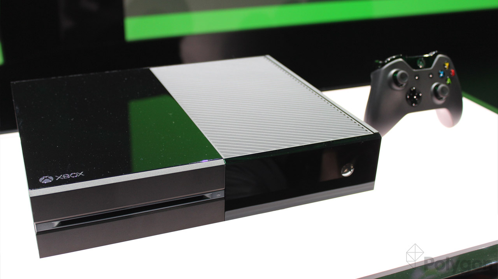
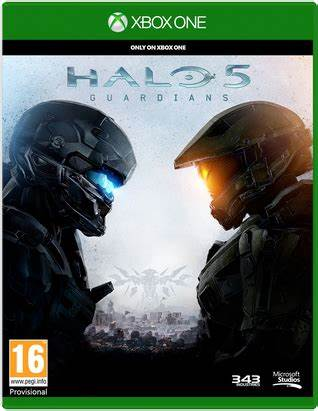
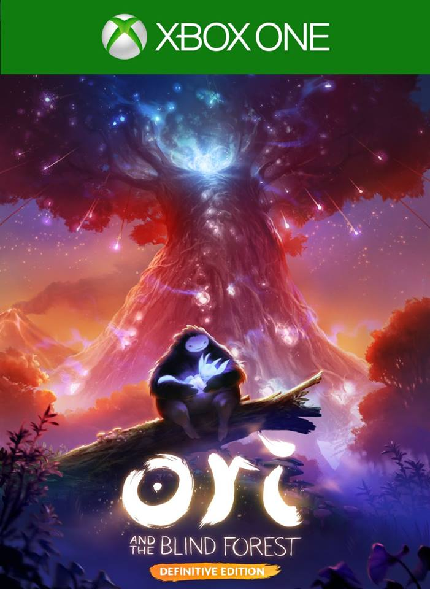
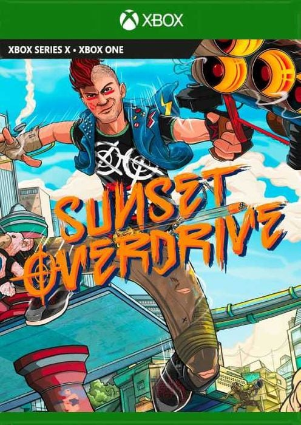
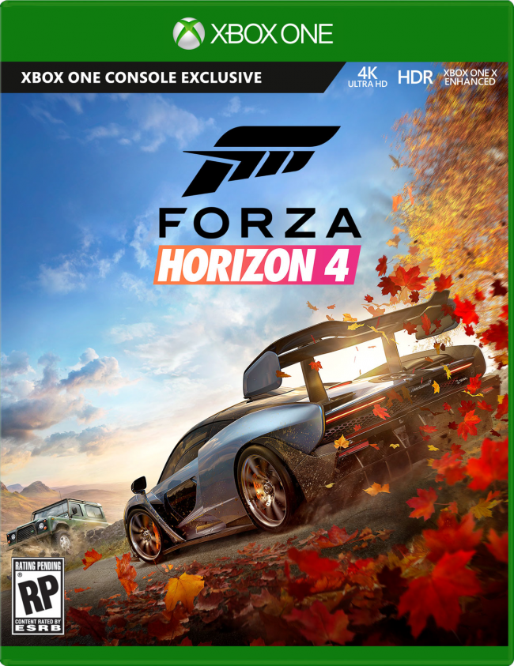

A Jornada dos Consoles: O Mutimídia Xbox One

O Xbox One é o modelo da 8ª geração de consoles da Microsoft, anunciado em 2013. Foi projetado para ser um centro de entretenimento "all-in-one", integrando recursos de TV e conexão HDMI, permitindo acessar a TV sem a necessidade de um receptor. O objetivo era competir não apenas no mercado de jogos, mas também como uma central de mídia doméstica.
O Xbox One foi parte de uma evolução contínua dos consoles da Microsoft, começando com o Xbox original lançado em 2001. Este primeiro console foi uma resposta da Microsoft aos consoles da Sony e da Nintendo, e trouxe ao mercado um hardware considerado o melhor da época. O sucesso do Xbox original levou ao desenvolvimento do Xbox 360 e, posteriormente, ao Xbox One.
O Xbox One se destacou por seus recursos avançados e pela integração com outros serviços e dispositivos, marcando um passo significativo na visão da Microsoft para o futuro dos jogos e entretenimento doméstico.
Principais Jogos do Xbox One
- Halo 5: Guardians (2015): Este título é o exclusivo mais vendido do console e foi muito elogiado, especialmente por seus gráficos e pelo componente multiplayer eletrizante.
- Ori and The Blind Forest (2015): Um ícone dos jogos de plataforma, é um dos exclusivos mais importantes da marca Xbox e oferece uma aventura emocional com desafios bem elaborados.
- Sunset Overdrive (2014): Um jogo de tiro em terceira pessoa com ideias inspiradas em games como Jet Set Radio e Tony Hawk’s Pro Skater, destacando-se por seu visual incrível e sistema de movimentação arrojado.
- Forza Horizon 4 (2018): Conhecido por sua jogabilidade envolvente e cenários deslumbrantes, Forza Horizon 4 é um dos jogos de corrida mais populares e visualmente impressionantes do Xbox One.
- Sea of Thieves (2018): Um jogo de aventura em mundo aberto que se destaca pela exploração marítima, combate naval e caça ao tesouro, proporcionando uma experiência única de pirataria multiplayer.
|  |
 |
 |
 |
 |
Trailer de Xbox One